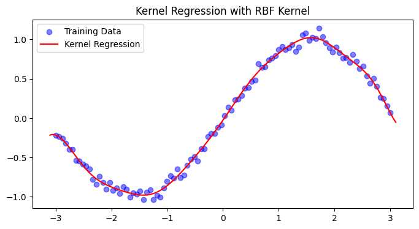
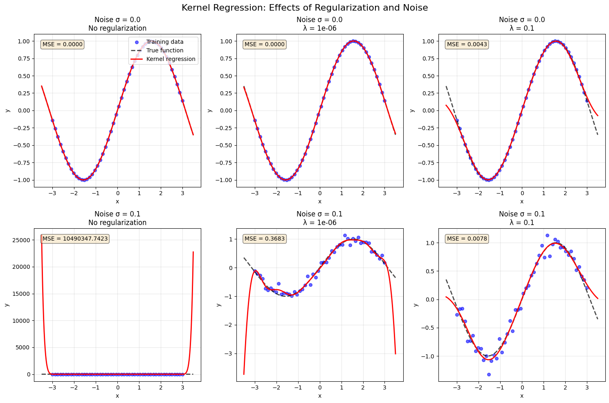

Kernel Regression: From Linear to Nonlinear Modeling#
1. Linear Regression Foundation#
The goal of regression is to predict a continuous output \(y\) from input features \(\mathbf{x} = (x_1, x_2, ..., x_d)^T\) using a learned function \(f\):
where \(\varepsilon\) represents random noise.
In linear regression, we assume \(f\) is linear:
(The bias term can be absorbed into \(\mathbf{w}\) by adding a constant \(1\) to \(\mathbf{x}\).)
The parameters \(\mathbf{w}\) minimize the sum of squared errors:
2. Kernel Regression: The Core Idea#
2.1 Why Kernels?#
Real-world data often has nonlinear patterns that linear models cannot capture. The solution: map each input \(\mathbf{x}\) to a higher-dimensional feature space \(\phi(\mathbf{x})\) where the relationship becomes linear:
The Challenge: Explicitly computing \(\phi(\mathbf{x})\) may be computationally prohibitive or even infinite-dimensional.
The Kernel Trick: Use a kernel function \(K\) that computes dot products in the feature space without ever constructing \(\phi(\mathbf{x})\) explicitly:
2.2 The Dual Formulation#
Using the kernel trick, the regression function becomes a weighted sum of kernel similarities to each training point:
where:
\(\alpha_i\) are weights learned from data
\(K(\mathbf{x}, \mathbf{x}_i)\) measures similarity between the test point \(\mathbf{x}\) and training point \(\mathbf{x}_i\)
Interpretation: The prediction is a similarity-weighted average of training outputs, where the weights \(\alpha_i\) are learned rather than being simple averages.
3. Training: Solving for \(\boldsymbol{\alpha}\)#
3.1 The Optimization Problem#
We learn \(\alpha_i\) by fitting the training data:
3.2 Matrix Formulation#
Define:
Kernel matrix \(\mathbf{K}\) (size \(n \times n\)): \(\mathbf{K}_{ij} = K(\mathbf{x}_i, \mathbf{x}_j)\)
Weight vector \(\boldsymbol{\alpha} = [\alpha_1, ..., \alpha_n]^T\)
Output vector \(\mathbf{y} = [y_1, ..., y_n]^T\)
For all training points, predictions are:
The sum of squared errors becomes:
3.3 The Solution#
Taking the derivative and setting to zero:
Since \(\mathbf{K}\) is symmetric (\(\mathbf{K}^T = \mathbf{K}\)):
If \(\mathbf{K}\) is invertible (positive definite kernel with distinct points), multiply by \(\mathbf{K}^{-1}\):
Thus:
Key Insight: The weights \(\boldsymbol{\alpha}\) are chosen so that training predictions perfectly match training outputs (\(\hat{\mathbf{y}}_{\text{train}} = \mathbf{y}\)). This is exact interpolation.
4. Making Predictions on New Data#
4.1 Single Test Point#
For a new test point \(\mathbf{x}_{\text{test}}\) (not in training set):
Step 1: Compute kernel similarities between \(\mathbf{x}_{\text{test}}\) and all training points:
Step 2: Make prediction using the same formula:
4.2 Multiple Test Points#
For \(m\) test points \(\{\mathbf{x}_{\text{test}}^{(1)}, \dots, \mathbf{x}_{\text{test}}^{(m)}\}\):
Define \(\mathbf{K}_{\text{test}}\) as an \(m \times n\) matrix:
Then predictions:
4.3 Training vs. Testing Summary#
Phase |
Input |
Prediction |
Equals true \(y\)? |
|---|---|---|---|
Training |
\(\mathbf{K}\) (\(n \times n\)) |
\(\hat{\mathbf{y}}_{\text{train}} = \mathbf{K}\boldsymbol{\alpha}\) |
Yes (exact fit) |
Testing |
\(\mathbf{k}_{\text{test}}\) (\(n \times 1\)) |
\(\hat{y}_{\text{test}} = \mathbf{k}_{\text{test}}^T \boldsymbol{\alpha}\) |
No (generalization) |
Important: The interpolation property \(\hat{\mathbf{y}}_{\text{train}} = \mathbf{y}\) holds only for training data. For test points, predictions are determined by similarity to training points, not by exact matching.
5. The Pseudoinverse Connection#
5.1 Unified View#
From the matrix appendix, recall the pseudoinverse \(X^+\) solves \(X\mathbf{w} = \mathbf{y}\) optimally. For kernel regression, we solve \(\mathbf{K}\boldsymbol{\alpha} = \mathbf{y}\), so:
When \(\mathbf{K}\) is invertible, \(\mathbf{K}^+ = \mathbf{K}^{-1}\). When \(\mathbf{K}\) is singular or ill-conditioned, we use regularization.
5.2 Regularization (Kernel Ridge Regression)#
In practice, with noisy data, exact interpolation leads to overfitting. Add a ridge penalty \(\lambda \|\mathbf{f}\|^2\):
The solution becomes:
This is the kernel ridge regression estimator. The regularization term:
Improves numerical stability (ensures invertibility)
Prevents overfitting by shrinking weights
Controls the smoothness of the prediction function
Practice
import numpy as np
from sklearn.metrics.pairwise import rbf_kernel
import matplotlib.pyplot as plt
# Generate synthetic data
X = np.linspace(-3, 3, 100)[:, None]
y = np.sin(X).ravel() + 0.05*np.random.randn(100)
# Compute RBF kernel (σ=1.0)
K = rbf_kernel(X, X, gamma=0.5)
# Solve for coefficients (with small regularization)
alpha = np.linalg.solve(K + 1e-6*np.eye(len(X)), y)
# Predict new points
X_test = np.linspace(-3.1, 3.1, 200)[:, None]
K_test = rbf_kernel(X_test, X, gamma=0.5)
y_pred = K_test @ alpha
# Plot results
plt.figure(figsize=(8, 4))
plt.scatter(X, y, color='blue', label='Training Data', alpha=0.5)
plt.plot(X_test, y_pred, color='red', label='Kernel Regression')
plt.title('Kernel Regression with RBF Kernel')
plt.legend()
plt.show()

6. The effects of regularization and noise levels on kernel regression#
Show code cell source
import numpy as np
from sklearn.metrics.pairwise import rbf_kernel
import matplotlib.pyplot as plt
# Set random seed for reproducibility
np.random.seed(42)
# --- Generate synthetic data ---
n_train = 50 # Number of training points
X = np.linspace(-3, 3, n_train)[:, None]
true_function = np.sin(X).ravel() # Underlying smooth function
# --- Create figure with subplots ---
fig, axes = plt.subplots(2, 3, figsize=(15, 10))
fig.suptitle('Kernel Regression: Effects of Regularization and Noise', fontsize=16)
# Parameters to test
noise_levels = [0.0, 0.1]#, 1.0] # Zero, low, high noise
lambda_regs = [0, 1e-6, 1e-1] # No regularization, weak, strong
# Store results for comparison
results = {}
for i, noise in enumerate(noise_levels):
for j, lambda_reg in enumerate(lambda_regs):
# Generate noisy training data
y = true_function + noise * np.random.randn(n_train)
# --- Training ---
# Compute RBF kernel matrix (gamma = 0.5)
gamma = 0.5
K = rbf_kernel(X, X, gamma=gamma)
# Solve for alpha with or without regularization
if lambda_reg == 0:
# No regularization - direct inversion (may be unstable)
try:
alpha = np.linalg.solve(K, y)
reg_status = "No regularization"
except np.linalg.LinAlgError:
alpha = np.linalg.pinv(K) @ y # Use pseudoinverse if singular
reg_status = "No regularization (pseudoinverse)"
else:
alpha = np.linalg.solve(K + lambda_reg * np.eye(n_train), y)
reg_status = f"λ = {lambda_reg}"
# --- Testing ---
X_test = np.linspace(-3.5, 3.5, 300)[:, None]
K_test = rbf_kernel(X_test, X, gamma=gamma)
y_pred = K_test @ alpha
# True function on test points
y_true_test = np.sin(X_test).ravel()
# Calculate test error
test_mse = np.mean((y_pred - y_true_test)**2)
# --- Plot ---
ax = axes[i, j]
ax.scatter(X, y, color='blue', alpha=0.6, s=30, label='Training data')
ax.plot(X_test, y_true_test, 'k--', linewidth=2, label='True function', alpha=0.7)
ax.plot(X_test, y_pred, 'r-', linewidth=2, label='Kernel regression')
ax.set_xlabel('x')
ax.set_ylabel('y')
ax.grid(True, alpha=0.3)
# Add title with parameters
title = f"Noise σ = {noise}\n{reg_status}"
ax.set_title(title)
# Display MSE in the corner
ax.text(0.05, 0.95, f'MSE = {test_mse:.4f}',
transform=ax.transAxes, verticalalignment='top',
bbox=dict(boxstyle='round', facecolor='wheat', alpha=0.5))
# Add legend only for first plot
if i == 0 and j == 0:
ax.legend(loc='upper right')
# Store results
results[(noise, lambda_reg)] = {'mse': test_mse, 'alpha': alpha}
plt.tight_layout()
plt.show()
# --- Print summary table ---
print("\n" + "="*70)
print("SUMMARY: Test MSE for different noise levels and regularization")
print("="*70)
print(f"{'Noise σ':<10} {'λ = 0':<20} {'λ = 1e-6':<20} {'λ = 0.1':<20}")
print("-"*70)
for noise in noise_levels:
row = f"{noise:<10}"
for lambda_reg in lambda_regs:
mse = results[(noise, lambda_reg)]['mse']
row += f"{mse:<20.6f}"
print(row)
print("="*70)
# --- Interpretation guide ---
print("\n" + "📊 INTERPRETATION GUIDE 📊".center(70))
print("="*70)
print("1. NOISE σ = 0 (No noise):")
print(" - λ = 0: Perfect fit (MSE ≈ 0) - model interpolates exactly")
print(" - λ > 0: Slight bias introduced, but still good fit")
print("\n2. NOISE σ = 0.1 (Low noise):")
print(" - λ = 0: May overfit slightly, capturing noise patterns")
print(" - λ = 1e-6: Balances fit and smoothness")
print(" - λ = 0.1: May underfit (too smooth)")
print("\n💡 KEY INSIGHT:")
print(" - More noise → need stronger regularization (larger λ)")
print(" - No noise → λ = 0 gives perfect interpolation")
print(" - Too much regularization → underfitting (bias)")
print(" - Too little regularization → overfitting (variance)")
print("="*70)

======================================================================
SUMMARY: Test MSE for different noise levels and regularization
======================================================================
Noise σ λ = 0 λ = 1e-6 λ = 0.1
----------------------------------------------------------------------
0.0 0.000000 0.000008 0.004277
0.1 10490347.742265 0.368313 0.007773
======================================================================
📊 INTERPRETATION GUIDE 📊
======================================================================
1. NOISE σ = 0 (No noise):
- λ = 0: Perfect fit (MSE ≈ 0) - model interpolates exactly
- λ > 0: Slight bias introduced, but still good fit
2. NOISE σ = 0.1 (Low noise):
- λ = 0: May overfit slightly, capturing noise patterns
- λ = 1e-6: Balances fit and smoothness
- λ = 0.1: May underfit (too smooth)
💡 KEY INSIGHT:
- More noise → need stronger regularization (larger λ)
- No noise → λ = 0 gives perfect interpolation
- Too much regularization → underfitting (bias)
- Too little regularization → overfitting (variance)
======================================================================
8. Primal vs. Dual Perspective#
8.1 Two Forms of the Solution#
In standard linear regression with features \(\mathbf{X}\), the weight vector can be expressed in two equivalent ways:
Primal Form (feature space):
Dual Form (sample space):
Both yield the same predictions when \(\mathbf{X}\) has full column rank.
8.2 Why the Dual Form Matters for Kernels#
The dual form reveals that \(\mathbf{w}\) is a linear combination of training samples:
When we map to feature space \(\phi(\mathbf{x})\), this becomes:
where \(\mathbf{K}_{ij} = \phi(\mathbf{x}_i)^T \phi(\mathbf{x}_j) = K(\mathbf{x}_i, \mathbf{x}_j)\).
Key insight: The prediction for a new point becomes:
We never need \(\phi(\mathbf{x})\) explicitly — only kernel evaluations \(K(\mathbf{x}_i, \mathbf{x})\)!
8.3 Computational Trade-offs#
Scenario |
Primal Form |
Dual Form |
|---|---|---|
\(n \ll d\) (few samples, many features) |
Slow (invert \(d \times d\)) |
Fast (invert \(n \times n\)) |
\(n \gg d\) (many samples, few features) |
Fast (invert \(d \times d\)) |
Slow (invert \(n \times n\)) |
Nonlinear kernels (RBF, polynomial) |
Not applicable |
Required (kernel trick) |
Example: RBF kernel with \(n=1000\) samples effectively uses infinite-dimensional features (\(d = \infty\)):
Primal form impossible (cannot compute \(\phi(\mathbf{x})\) explicitly)
Dual form works with \(1000 \times 1000\) kernel matrix
9. Key Takeaways#
Kernel regression enables nonlinear fitting by implicitly mapping data to high-dimensional spaces
The dual formulation expresses predictions as weighted sums of kernel similarities: $\( \hat{y}(\mathbf{x}) = \sum_{i=1}^n \alpha_i K(\mathbf{x}, \mathbf{x}_i) \)$
Training solves \(\boldsymbol{\alpha} = \mathbf{K}^{-1}\mathbf{y}\) (unregularized) or \(\boldsymbol{\alpha} = (\mathbf{K} + \lambda\mathbf{I})^{-1}\mathbf{y}\) (regularized)
Testing uses \(\hat{y}_{\text{test}} = \mathbf{k}_{\text{test}}^T \boldsymbol{\alpha}\), where \(\mathbf{k}_{\text{test}}\) contains similarities between test and training points
Regularization (\(\lambda > 0\)) is essential for:
Numerical stability (ensuring \(\mathbf{K} + \lambda\mathbf{I}\) is invertible)
Preventing overfitting to noise
Kernel choice controls model flexibility:
Linear kernel → standard linear regression
RBF kernel → smooth, local approximation
Polynomial kernel → interaction terms up to degree \(d\)